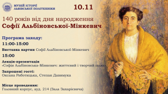
вт., 10 листоп., 11:00 – вт., 10 листоп., 17:00

вт., 10 листоп., 11:00 – вт., 10 листоп., 17:00
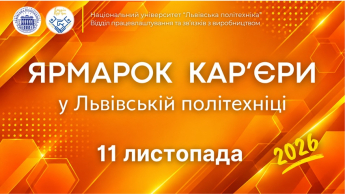
ср., 11 листоп., 10:00 – ср., 11 листоп., 15:00
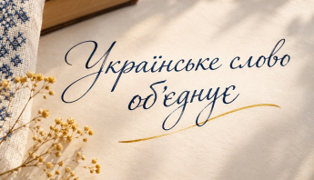
ср., 11 листоп., 15:00 – ср., 11 листоп., 18:00

чт., 12 листоп., 14:00 – чт., 12 листоп., 18:00
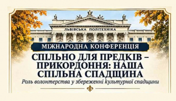
пт., 13 листоп., 10:00 – сб., 14 листоп., 15:00
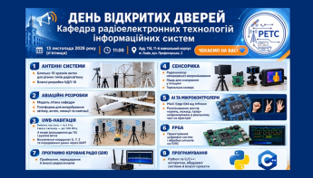
пт., 13 листоп., 11:00 – пт., 13 листоп., 16:00

10 ЛИСТОП. 2026, 12:05
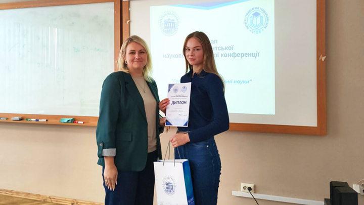
10 ЛИСТОП. 2026, 11:20
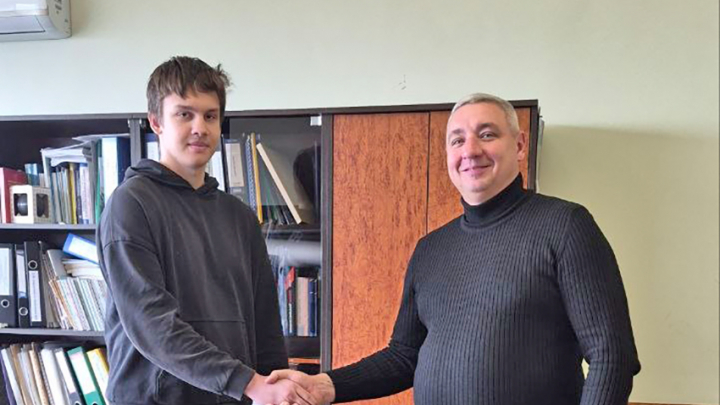
10 ЛИСТОП. 2026, 10:13
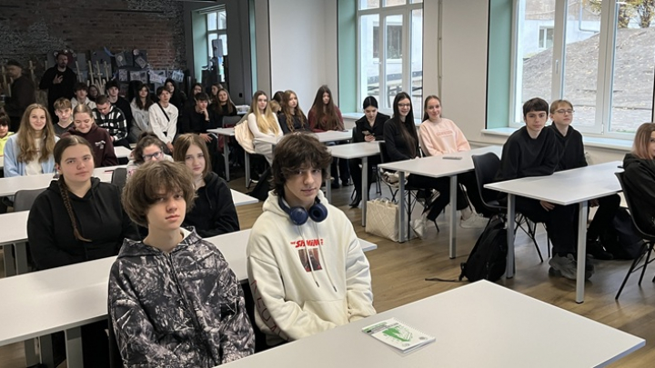
9 ЛИСТОП. 2026, 16:52
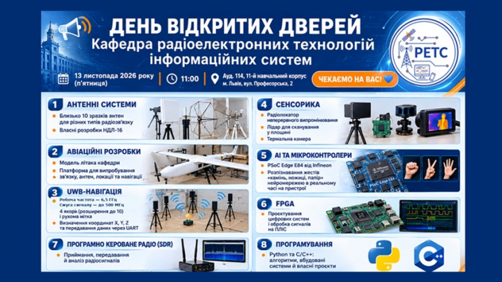
9 ЛИСТОП. 2026, 15:50
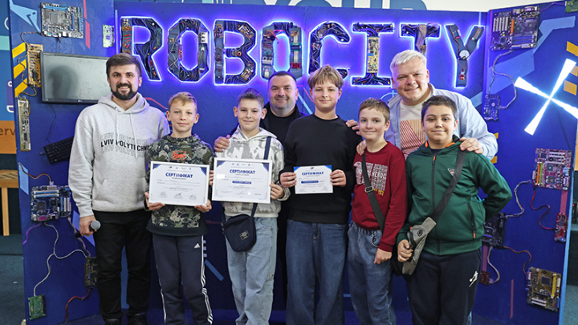
9 ЛИСТОП. 2026, 15:10

9 ЛИСТОП. 2026, 14:15

9 ЛИСТОП. 2026, 12:51
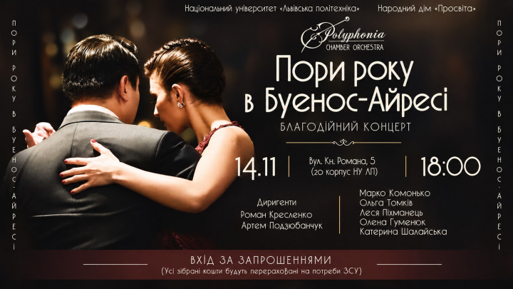
9 ЛИСТОП. 2026, 12:17
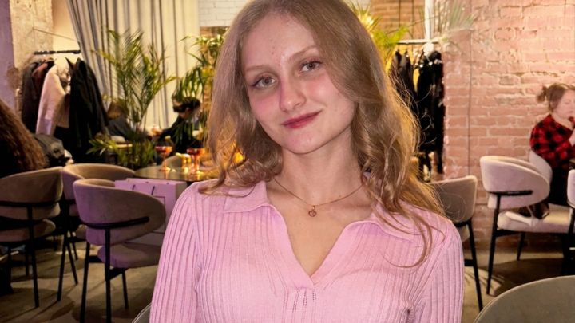
9 ЛИСТОП. 2026, 11:51
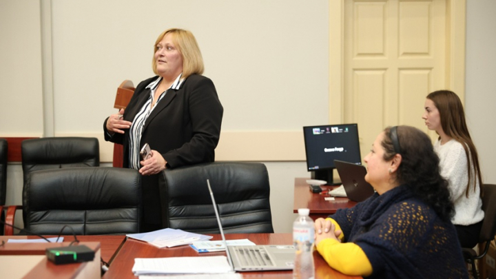
9 ЛИСТОП. 2026, 11:31
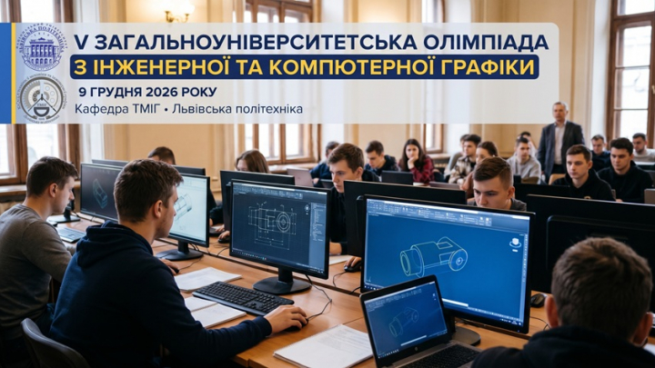
9 ЛИСТОП. 2026, 10:39